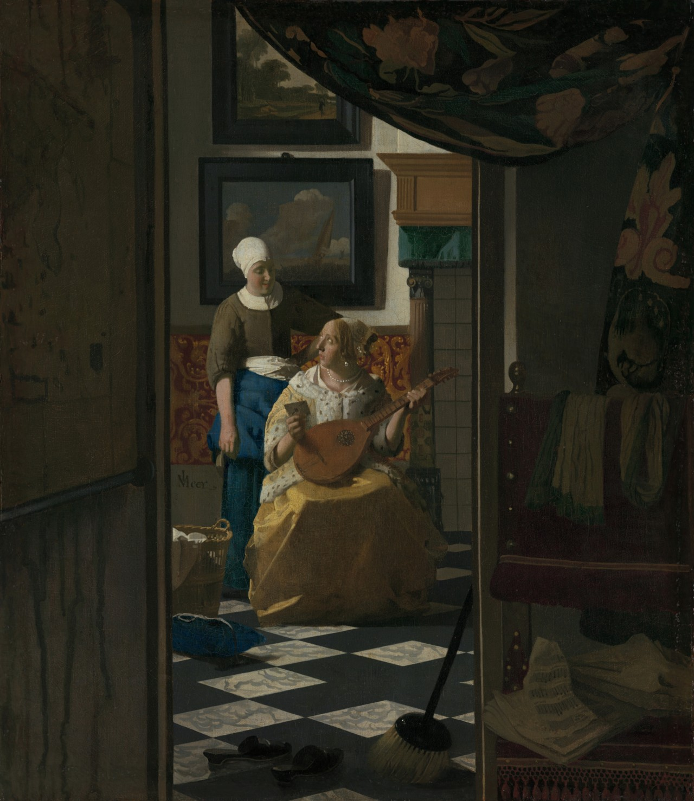

情书 The Love Letter
维米尔 · 约1669–约1670年 · 阿姆斯特丹荷兰国立博物馆
Johannes Vermeer · c. 1669–c. 1670 · Rijksmuseum, Amsterdam
图片：Wikimedia Commons，公有领域 / Image: Wikimedia Commons, public domain

发现 · Discover
从门口看 Through the doorway
我们站在一个昏暗的房间里，透过门口，看着另一个明亮的房间。
We stand in a dim room, looking through a doorway into another, brightly lit one.
拉开的帘子 The curtain
平时挂在门口的帘子，被拉到了一边。
The curtain that usually hangs in the doorway has been pulled aside.
刚收到的信 The letter
女子刚接过信，抬头期待地看着女仆。信里会是恋人的什么消息呢？
The woman has just taken the letter and looks up expectantly at her maid. What news will it bring from her lover?
鲁特琴 The lute
她正在弹琴，被送信的女仆打断了。在当时，音乐和乐器常和爱情联系在一起。
She was playing when the maid interrupted her. At the time, music and musical instruments were often associated with love.
墙上的海 The seascape
在17世纪，大海常被比作爱情，恋人被比作船。汹涌的海代表动荡的感情，平静的海是爱情的好兆头。
In the 17th century, love was often compared to the sea, and the lover to a ship. A stormy sea meant a turbulent relationship; a calm sea was a good omen.
签名 The signature
维米尔在画上签了“IVMeer”。
Vermeer signed this painting “IVMeer”.
故事 · The story
ACT I 第一幕 · 收到信的那一刻 The moment a letter arrives
“情书”是荷兰黄金时代很受欢迎的主题，有画写信的，有画读信的。维米尔这几个时刻都画过，而这一幅画的是收到信的那一刻。
The love letter was a popular theme in Dutch Golden Age painting: writing a letter, reading one. Vermeer painted all these moments. This one shows the moment a letter arrives.
约1669–约1670年 · 阿姆斯特丹荷兰国立博物馆 / c. 1669–c. 1670 · Rijksmuseum, Amsterdam
ACT II 第二幕 · 从暗处看 Seen from the shadows
维米尔选了一个不寻常的视角：我们站在暗处，透过门口看着她们。这种距离，让这一刻更像一个秘密。
Vermeer chose an unusual vantage point: we stand in the shadows, watching them through a doorway. The distance makes the moment feel like a secret.
约1669–约1670年 · 阿姆斯特丹荷兰国立博物馆 / c. 1669–c. 1670 · Rijksmuseum, Amsterdam
ACT III 第三幕 · 被偷走的画 The stolen painting
1893年，荷兰国立博物馆买下了这幅画。1971年9月，它借给布鲁塞尔的一个展览时被偷走了。画找回来后经过修复，一年后又回到了阿姆斯特丹。
The Rijksmuseum bought the painting in 1893. In September 1971, while on loan to an exhibition in Brussels, it was stolen. After it was recovered and restored, it returned to Amsterdam a year later.
约1669–约1670年 · 阿姆斯特丹荷兰国立博物馆 / c. 1669–c. 1670 · Rijksmuseum, Amsterdam
信里写了什么，我们永远不会知道。 What the letter says, we will never know.
作品档案 · Artwork record
| 画家（生卒年） · Artist (dates) | 约翰内斯·维米尔（1632–1675） / Johannes Vermeer (1632–1675) |
|---|---|
| 画名 · Title | 情书 / The Love Letter |
| 年份 · Date | 约1669–约1670年 / c. 1669–c. 1670 |
| 材质 · Medium | 布面油画 / Oil on canvas |
| 尺寸 · Dimensions | 44 × 38.5 cm |
| 收藏地 · Collection | 阿姆斯特丹荷兰国立博物馆，荣誉画廊（1893年购入；编号 SK-A-1595） / Rijksmuseum, Amsterdam, Gallery of Honour (acquired 1893; SK-A-1595) |
关于画家 · About the artist
约翰内斯·维米尔（1632–1675），荷兰画家，一生都在代尔夫特生活和创作。他留下的画作只有约35幅，以描绘室内的光线著称。
Johannes Vermeer (1632–1675) was a Dutch painter who lived and worked in Delft all his life. Only about 35 of his paintings survive, famous for their rendering of light in quiet interiors.
更多维米尔的画 · More by Johannes Vermeer